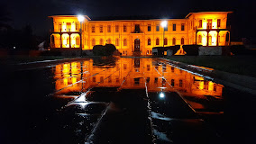

Çorum Müzesi, Çorum il merkezinde bulunan bir arkeoloji ve etnografya müzesidir.
Müzede Alacahöyük, Boğazköy, Hattuşaş, Pazarlı ve Kuşsaray gibi arkeolojik kazı merkezlerinden çıkarılan buluntular sergilenmektedir.
Çorum Müzesi ilk olarak 13 Ekim 1968 tarihinde, günümüzde kullanılmayan ilk binasında hizmete girmiştir. 1968 yılından itibaren 33 yıl hizmet veren müze binası, arkeolojik kazılardan elde edilen eserlerin yoğunluğu nedeniyle ihtiyaca cevap veremez duruma gelmiştir. Bunun üzerine yapımı 1908 yılında başlayıp 1914 yılında tamamlanan ve yapıldığı günden itibaren hastane, Ziraat Mektebi, Makine Meslek Yüksek Okulu olarak hizmet veren bina, Çorum Müzesi'nin yeni binası olarak kullanılmak üzere 1986 yılında tahsis edilmiştir.
1988 yılında yangın geçiren bina, 1989 yılında müze olarak kullanılmak üzere restore edilmeye başlanmıştır. Restorasyon çalışmalarının tamamlanması ile Çorum Müzesi; 11.03.2003 tarihinde, bu tarihî binada ziyarete açılmıştır.
